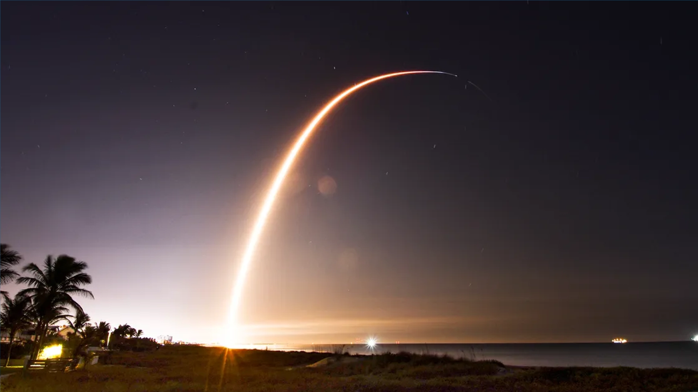

9 min read
"The Future of Space Exploration: Missions and Milestones," a comprehensive overview of the ambitious endeavors set to redefine human and robotic exploration of space in the coming years. This exploration spans upcoming missions to the Moon, ventures to Mars, and the far-reaching gaze of the James Webb Space Telescope (JWST), each aimed at unraveling the mysteries of our universe and expanding the frontiers of human knowledge.
NASA's Artemis program marks a significant milestone in the next era of lunar exploration, aiming to land the first woman and the next man on the Moon by the mid-2020s. This program seeks to establish a sustainable human presence on the Moon by the end of the decade, serving as a stepping stone for the future exploration of Mars and beyond. Artemis missions will explore the Moon's South Pole, a region believed to contain water ice that could be vital for in-situ resource utilization, providing drinking water or to create rocket fuel. The program also includes the development of the Gateway, a lunar orbiting outpost that will offer a new and strategic platform for lunar exploration, scientific research, and technology demonstrations.
The Mars Sample Return mission, a collaborative effort between NASA and the European Space Agency (ESA), represents a groundbreaking endeavor to bring samples from the Martian surface back to Earth for detailed analysis. This mission aims to answer key questions about the potential for life on Mars and the planet's geological history, offering insights that could only be achieved through direct examination of Martian soil and rocks. In parallel, preparations for human missions to Mars are advancing, with ambitions to send astronauts to the Red Planet in the 2030s. These missions will build upon the robotic exploration of Mars, including the ongoing research conducted by rovers and orbiters, to understand the environment, atmosphere, and potential resources available on Mars for human explorers.
The James Webb Space Telescope (JWST), launched in late 2021, is set to transform our understanding of the universe. As the premier observatory of the next decade, JWST will peer into the universe's earliest galaxies, study the formation of stars and planets, and investigate the potential for life in other solar systems. Its unprecedented infrared capabilities will allow astronomers to look back in time to observe the first galaxies that formed after the Big Bang and provide new insights into the formation of celestial bodies and the composition of exoplanets' atmospheres.
The future of space exploration also includes a variety of innovative missions and technologies designed to explore asteroids, comets, and the outer planets. Missions like Lucy, set to explore Jupiter's Trojan asteroids, and the Dragonfly drone to Saturn's moon Titan, promise to broaden our understanding of the solar system's diversity and complexity. Additionally, advancements in propulsion technology, space habitats, and life support systems are essential for the long-duration missions required to explore deep space. The future of space exploration is bright, with missions and milestones on the horizon that promise to expand the boundaries of human presence and scientific inquiry. From the return to the Moon with the Artemis program to the groundbreaking potential of the Mars Sample Return mission and the cosmic revelations anticipated from the James Webb Space Telescope, humanity stands on the brink of a new era of discovery. These efforts will not only enhance our understanding of the universe but also inspire future generations to continue the quest for knowledge beyond our planet. As we look ahead, the future of space exploration holds the promise of answering some of our oldest questions and posing new ones, in the endless pursuit of understanding our place in the cosmos.